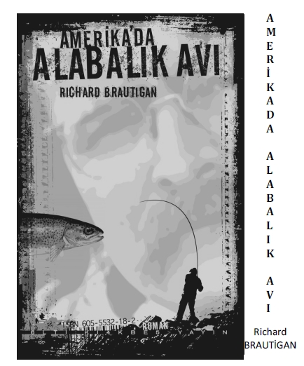

Richard Brautigan 1935'de
Washington, Tacoma'da doğdu, Beat ve aktivist hareketle birlikte
60 ve 70'lerin karşı-kültür merkezine oturdu.
'84 Eylülündeki intiharından
yaklaşık 10 yıl sonra Altıkırkbeş boşlukta çiçek
yetiştiren bir avuç okuruna R.B
kitaplarını sunmaya başladı.
2011 yayın döneminde yeni baskı
ve ilk yayımlanacaklarla birlikte Richard Brautigan külliyatı
ALTIKIRKBEŞ